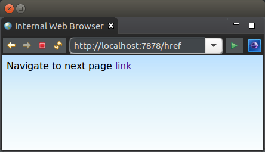
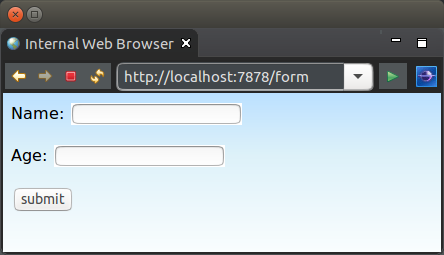
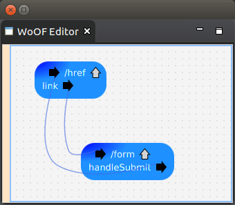

This tutorial demonstrates the ease of building a web application prototype that can be later extended to fully a functional web application. This is demonstrated by providing wire frame navigation back and forth between the following two pages:
WoOF provides the ability to wire frame the web pages into a working prototype. This allows users to provide feedback on the web application before any code needs to be written. Having this feedback catches issues very early in the development life-cycle leading to reduced overall effort/cost in building the web application.
Once the users are happy with the web application, the later tutorials will show how to easily extend the prototype into a working application.
<html>
<head>
<title>Example page with href link</title>
<link href="./css/Site.css" rel="stylesheet" type="text/css" />
</head>
<body>
<p>Navigate to next page <a href="#{link}">link</a></p>
</body>
</html>
<html>
<head>
<title>Page with form submission to wireframe navigate</title>
<link href="./css/Site.css" rel="stylesheet" type="text/css" />
</head>
<body>
<form action="#{handleSubmit}">
<p>Name: <input type="text" name="name" /></p>
<p>Age: <input type="text" name="age" /></p>
<p><input type="submit" value="submit" /></p>
</form>
</body>
</html>
Each of the above pages will render in a web browser. The HTML does contain the non-intrusive #{link} tags which are used by WoOF to determine the links to configure for the page.
WoOF focuses on non-intrusive instrumentation of the web pages so the raw HTML can be rendered in a browser. This makes for quick turn-around in tweaking pages, as the application need not be run - nor even built.
The following configuration shows wiring up the links within the application.woof.
The names of the links are the tag names. Later tutorials will show how to map the form submission to a server POJO (plain old java object) method.
As the WoOF HTML pages do not contain the actual link URIs, changing the navigation of the web application is controlled by the application.woof configuration. This allows keeping navigation details out of the web page design. It also makes changing web application navigation simple as the application evolves.
The next tutorial looks at rending dynamic content.